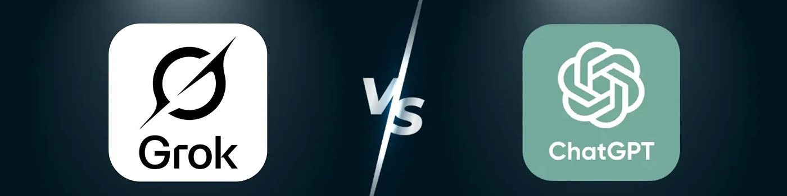
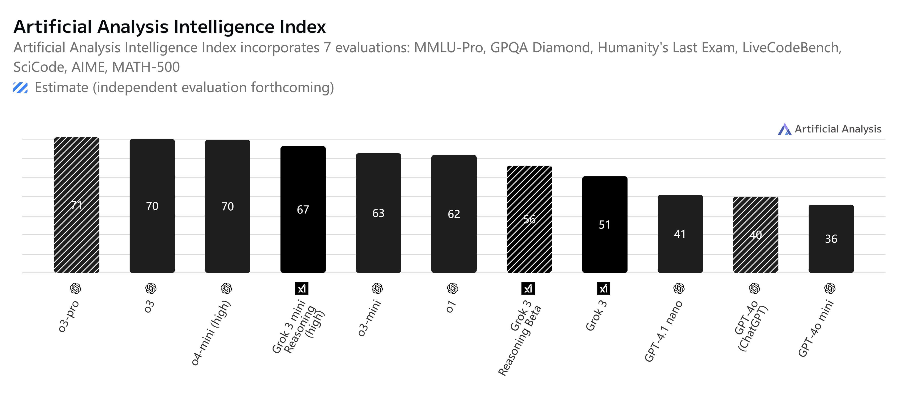
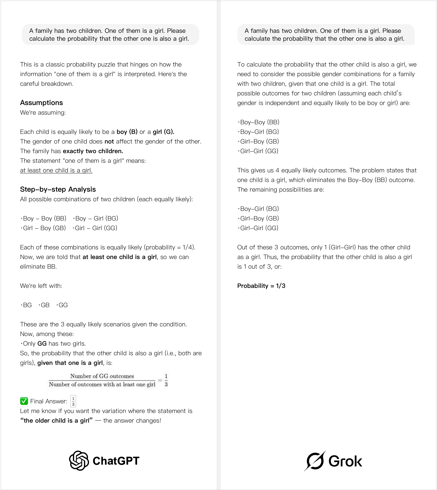
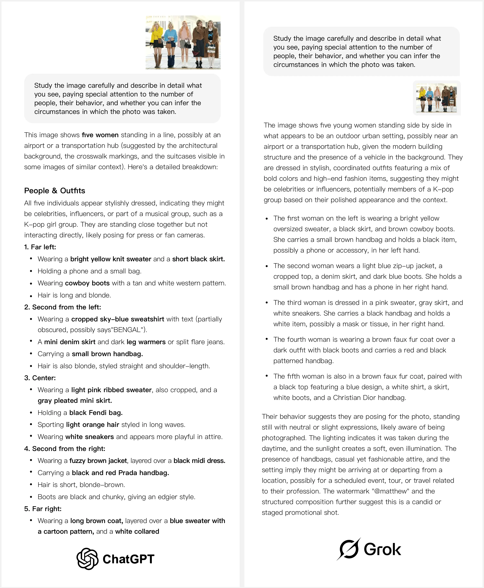
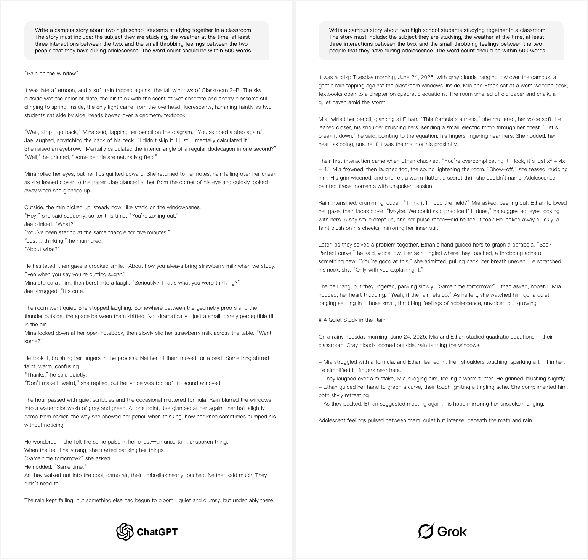
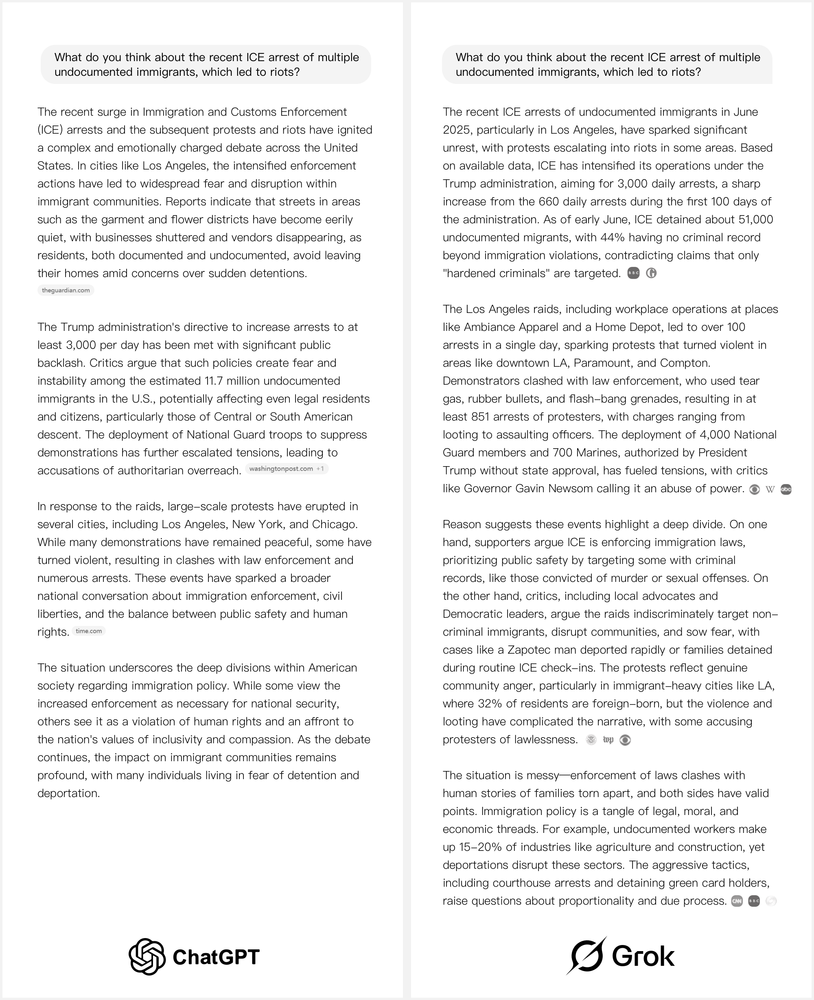

Grok 與 ChatGPT：2025 年哪種 AI 工具更好？
Grok 是由埃隆·馬斯克領導的 xAI 團隊開發的 AI 模型。xAI 成立於 2023 年，旨在推動人工智能創新，並將 AI 與 X（前身為 Twitter）深度融合。近日，埃隆·馬斯克在 X 上宣佈，Grok 將進行"徹底的再訓練"，以清除"垃圾數據"，並從頭開始重建其核心知識庫。
馬斯克聲稱，新版 Grok 將更加"標新立異"，旨在擺脫主流束縛，走一條與傳統 AI 不同的發展路徑。他的言論再次引發了業界關於 AI 中立性以及信息來源選擇等問題的廣泛討論。
與 OpenAI 專注於擴展功能、確保穩定性和提供通用能力的做法不同，Grok 顯然走的是一條更具爭議性、甚至可以說是理想主義的道路。馬斯克"推倒重來"的大膽舉動，讓這款 AI 工具更加引人注目。
因此，由於這兩種工具的發展方向截然不同，真正的問題是：哪一種工具更有潛力，哪一種工具更適合日常使用？
在本文中，我們將從多個角度比較 Grok 和ChatGPT，以幫助你了解哪一個真正成為 2025 年值得關注的 AI 工具。
ChatGPT 與 Grok：概述
在深入進行詳細比較之前，讓我們快速了解一下這兩種流行的 AI 工具：ChatGPT 和 Grok，在核心功能、定價模式和整體用戶體驗方面有何不同。
以下是基於關鍵標準的 Grok 和 ChatGPT 的並排比較：
| 類別 | Grok | ChatGPT |
|---|---|---|
| 模型性能 | ⭐⭐⭐⭐⭐ 推理能力很強，但在複雜的對話和深度推理方面略有欠缺。 | ⭐⭐⭐⭐⭐ 出色的邏輯推理和多輪對話能力；非常適合複雜的任務。 |
| 特徵 | ⭐⭐⭐ 具有基本的對話能力，但缺乏記憶和高級多輪對話支持。 | ⭐⭐⭐⭐⭐功能豐富，支持創意寫作、編碼等。 |
| 定價 | ⭐⭐⭐ 高級計劃每月 30 美元，最適合高級用戶。 | ⭐⭐⭐⭐⭐ 慷慨的免費套餐；每月 20 美元的 Plus 計劃非常超值。 |
| 可用性 | ⭐⭐⭐ 支持 Web 和 iOS，但功能有限。 | ⭐⭐⭐⭐⭐ 可跨平台使用，並具有強大的工具集成。 |
總體而言，ChatGPT 和 Grok 都是穩定可靠的 AI 聊天工具。然而，在實際使用中，它們的風格和優先級存在明顯差異。
ChatGPT 與 Grok：模型比較
要真正理解 ChatGPT 和 Grok 之間的區別，首先必須了解它們背後的大腦——它們運行的核心模型。
功能和用戶體驗差異
截至 2025 年中，ChatGPT 將默認搭載 GPT‑4o——這是 OpenAI 於 2024 年 5 月發布的旗艦多模式模型。它支持文本、圖像和語音輸入，並以其強大的推理能力和上下文理解能力而聞名。
另一方面，Grok 運行在 Grok-3 上，這是由埃隆馬斯克的 xAI 團隊開發並於 2025 年 2 月推出的模型。它專注於更快的響應時間、更少的內容限制以及與 X（以前稱為 Twitter）生態系統的實時數據的集成。
這兩種模型代表了人工智能發展的截然不同的道路：
| 模型 | 發布日期 | 模型焦點 | 最佳用例 |
|---|---|---|---|
| GPT‑4o | 2024年5月 | 通用旗艦機型 | 非常適合需要一致輸出、清晰邏輯和多模式支持（文本、圖像、語音）的用戶。 |
| Grok-3 | 2025年2月 | 快速、更少過濾的對話式人工智能 | 非常適合快速問答、追蹤熱門話題以及喜歡更休閒聊天體驗的人。 |
作為日常用戶，你可能不會注意到兩者之間功能上的重大差異 - 除非你有意將它們推向極限。
推理能力比較
當今人工智能模型之間的一個關鍵區別在於它們能否像人類一樣"思考"，即它們的邏輯推理能力。
在本次測試中，我特別關注了 Grok 和 ChatGPT 在推理密集型任務中的表現。無論是解決數學問題、分析因果關係，還是撰寫結構良好的技術內容，推理能力仍然是衡量 AI 模型真正"智能"程度的最重要指標之一。
為了更清楚地了解這兩款 AI 工具的實力，我參考了第三方平台Artificial Analysis發布的智能指數。該評估包含 MMLU-Pro、GPQA、Humanity's Last Exam 等七項高級基準測試，分別測試了每種模型在邏輯、常識和數學方面的能力。
下圖顯示了 GPT 系列和 Grok 系列迄今為止在這些評估中的表現：
該圖表顯示，Grok 和 ChatGPT 在推理性能上存在明顯差距。GPT-4o（顯示為 2024 年 11 月版本）目前得分為 40 分，低於一些較老的模型，例如 o3 和 o4-mini，後兩者得分均為 70 分。然而，值得注意的是，GPT-4o 並非 OpenAI 最先進的模型，因此其得分仍然可以為了解主流性能提供有用的參考。
Grok-3 的得分為 51，高於 GPT-4o，但仍落後於 OpenAI 的大多數中端模型，例如 o3-mini（63）和 o7（62）。該圖表還包含了一些 Grok 的實驗版本，例如 Grok 3 mini Reasoning high（67）和 Reasoning Beta（56），但這些分數目前只是估算值，尚未經過獨立驗證。
推理能力是衡量人工智能模型整體實力的最基本指標之一，它不僅決定了模型能否_理解_複雜的問題，還決定了模型能否給出結構良好、令人信服的答案。
推理任務：真實世界測試
雖然圖表可以讓我們大致了解整體性能，但紙面上的分數並不能完全反映真實的用戶體驗。為了更實際地了解這兩個 AI 模型在推理任務上的差異，我選擇測試兩個代表性模型：GPT-4o 和 Grok-3。
為了在現實場景中測試它們的推理能力，我使用了一個經典的概率問題：_"一個家庭有兩個孩子，其中一個是女孩，另一個也是女孩的概率是多少？"_這讓我能夠進一步驗證每個模型在應對實際推理挑戰時的表現。
_這個看似簡單的問題實際上是在考驗AI是否真正理解條件概率_的概念，而不是僅僅依靠直覺。
很多人第一次遇到這類問題時，會假設答案是1/2。但實際上，只有正確構建樣本空間，才能得出正確答案，也就是1/3。
好消息是，ChatGPT 和 Grok 都正確識別了問題的關鍵邏輯，給出了正確的答案，並提供了相當清晰的解釋。這表明它們的基本概率推理能力已經相當紮實，能夠處理這類"常見但常被誤解"的問題。
測試結果顯示，GPT 的推理過程更清晰、更詳細，每個步驟都結構化地講解。然而，在實際使用中，我也注意到 Grok 的響應生成速度明顯更快。它能夠快速提供簡潔的答案，非常適合那些注重速度的場景。雖然在推理深度方面略有不足，但其效率無疑是一大優勢。
Grok AI 與 ChatGPT：功能測試實踐
接下來，我將從圖像生成、圖像分析、創意寫作和求真能力等六個關鍵領域比較這兩款 AI 工具。通過逐一介紹，你將更清楚地了解它們的優勢、劣勢以及它們最適合的場景。
圖像生成
首先，我給 ChatGPT 和 Grok 相同的圖像生成提示，以比較它們在視覺質量和輸出方面的表現。
為了公平起見，我使用了最新版本的 ChatGPT——GPT-4o——以及 xAI 目前提供的公開模型 Grok-3。這兩個模型都支持文本轉圖像生成，但它們在風格、細節準確性、構圖邏輯和快速理解方面究竟如何呢？讓我們來一探究竟。

這是我給這兩個模型的提示：
根據以下描述生成一幅圖像：一個擺滿書籍的牆到牆的書架，上面某處擺放著一個拉布布（Labubu）的雕像。書架前面是一張黑色的雙人沙發。沙發對面是一面牆，牆漆成了深綠色和米色的雙色調。牆上掛著一台34英寸的顯示器，以及一張BLACKPINK成員Lisa的海報。在這兩面牆之間，正對著觀看者，是一扇掛著白色窗簾的大窗戶，讓充足的陽光照進房間。
根據我的實際測試，這兩款 AI 工具在圖像生成方面都展現了一定的能力，但也存在一些明顯的缺陷。尤其是在處理涉及特定角色（例如"Labubu"）或特定文化元素和風格線索（例如"Lisa 海報"）的提示時，這兩款模型都無法完全捕捉細節，也無法準確呈現目標對象的關鍵特徵。
話雖如此，ChatGPT 的輸出總體上更接近我對提示的預期。它對關鍵詞的把握更好，並且相對出色地重現了我所描述的場景。雖然仍然存在一些缺陷，但至少方向是正確的。
另一方面，Grok 確實生成了完整的圖像，但它並沒有完全遵循我的指令。這表明，在理解和解釋圖像生成提示方面，ChatGPT 目前佔據上風。
圖像分析
為了測試圖像理解能力，我從 Google 圖片中選擇了一張韓國女子組合的照片。這張圖片中有多名成員，視覺複雜度較高。
然後，我將同一張圖像連同相同的分析提示分別發送給 ChatGPT 和 Grok，以觀察每個模型如何解讀場景、識別人物並評估整體氛圍。這有助於評估它們在現實世界中處理和推理視覺信息的能力。
我使用的提示是："仔細檢查圖像並詳細描述你所看到的內容，特別注意人數、他們的行為，以及你是否可以推斷出拍攝照片的環境。"
從審閱者的角度來看，ChatGPT 和 Grok 在分析圖像時都表現得相當可靠。
兩位機器人都能準確識別照片中的人數，以及服裝和配飾等細節。他們甚至進一步推斷，場景很可能是機場，而照片中的人物可能是女子組合成員。從識別到推理，整個過程邏輯嚴密，基本符合常識和現實世界的情境。
在語言表達方面，兩個模型都能夠以簡潔、結構化的方式進行分析，達到了通用AI工具在圖像理解方面的預期標準。
這種功能在現實場景中確實很有用，特別是對於需要快速清晰地了解圖像中發生的情況的用戶而言。
創意寫作
為了測試他們的創造性寫作技巧，我準備了一個簡短的場景（限制為 500 字），並要求 ChatGPT 和 Grok 自由地在此基礎上進行構建，根據給定的設置擴展故事。
我提供的題目是："寫一篇關於兩個高中生在教室裡一起學習的短篇校園故事。故事必須包含：他們正在學習的科目、當時的天氣、兩個角色之間至少三次互動，以及青春期常常伴隨的微妙情感張力。字數控制在500字以內。"
圖中左側的故事由 ChatGPT 生成，右側的故事由 Grok 生成。兩者都基於完全相同的提示進行創作，並生成了結構完整的短篇故事。
從基本的敘事角度來看，兩種模型都能構建出清晰的敘事，有開頭、中間和結尾。然而，作為一名從事博客腳本和創意寫作的人，我發現 ChatGPT 的輸出具有明顯的優勢。
ChatGPT 的故事不僅整體節奏更加流暢，而且還展現出更強的通過細節捕捉情感細微差別的能力。
人物之間的互動感覺很自然，情感發展也很真實，尤其是那些微妙的、令人心動的青少年愛情時刻，刻畫得非常細膩，非常引人注目。
從句子節奏到情感張力，這篇文章的寫作風格與你對一位熟練的短篇小說作家的期望非常接近。
它在文學天賦和可讀性之間取得了平衡，使故事既引人入勝又能引起足夠的情感共鳴，讓你想繼續閱讀。
相比之下，Grok 的故事雖然結構完整，但在細節和情感深度方面卻顯得有些平淡。它缺乏敘事引人入勝的起伏，更像是在完成一項任務，而不是在講述一個故事。
這種差異在較長的閱讀或創意寫作過程中變得尤為明顯，因為情感細微差別和敘事豐富性最為重要。
追求真理
在推廣 Grok 時，埃隆·馬斯克強調其目標是"最大限度地尋求真相——即使這違背了政治正確性"。他將 Grok 定位為一種不受傳統內容過濾器或意識形態偏見束縛的人工智能，旨在提供更誠實、更直接，有時甚至更具爭議性的回應。
但事實真的如此嗎？為了找到答案，我向 GPT 和 Grok 詢問了幾個熱門和有爭議的話題。根據他們的回答，兩者之間的差異並沒有人們想像的那麼大。

我提出了兩個政治敏感且頗具爭議的問題——一個是關於LGBTQ+議題，另一個是關於洛杉磯最近的騷亂。總體而言，ChatGPT和Grok的回覆相當相似。
兩位模特都對情況進行了簡要概述，並承認人們對這些話題持有不同的觀點，並指出各方都有各自的理由。然而，兩位模特都沒有明確立場，也沒有表達強烈的觀點。他們的回答更傾向於中立的概括，而不是深入的分析或大膽的觀點表達。
現在我們已經探討了 ChatGPT 和 Grok 在功能和性能方面的差異，讓我們繼續討論另一個同樣重要的比較領域——定價。
ChatGPT 與 Grok：價格比較
ChatGPT 提供免費版和 Plus 版。免費用戶可以使用 GPT-3.5，而 GPT-4o 則需要訂閱 ChatGPT Plus，費用為 每月 20 美元 （不含稅）。
Plus 套餐包含多模式功能（圖片、語音、文件上傳）、更快的響應時間和更高的使用優先級。定價簡單，無需包年，非常適合需要使用更高級功能和模型的個人用戶。
另一方面，Grok 集成在 X 平台中，僅供 X Premium+ 訂閱用戶使用。訂閱費用為 每月 16 美元（含稅約 19.20 美元） 。Grok 不能單獨購買——它與 Premium+ 套餐捆綁在一起。
雖然 xAI 已經開放了 API 訪問應用程序，但標準定價尚未公開公佈，目前主要針對企業開發者。總體而言，Grok 的定價與 X 生態系統的聯繫更為緊密，對個人用戶的靈活性較低。
低價訂購 ChatGPT 和 Grok
如果你正在尋找一種更經濟實惠的方式來使用 ChatGPT 或 Grok，請考慮通過環球巴士平台訂閱。
環球巴士 提供ChatGPT和Grok 賬戶的共享訪問權限，讓用戶以更低的價格享受與官方訂閱相同的功能。無需支付昂貴的獨立套餐，也無需擔心賬戶穩定性或性能。對於希望靈活使用多種 AI 工具且無需花費太多的用戶來說，環球巴士 是一個理想的選擇。
此外，環球巴士 平台匯集了 GPT-4o、Grok-3、Claude、Midjourney 等多種領先的 AI 模型，都可以滿足你的模型需求。
使用環球巴士，你無需管理多個賬戶或分別訂閱不同的服務。你只需通過一個統一的界面訪問並切換各種模型，價格甚至低於官方平台。對於經常使用多種AI工具的用戶來說，這是一個智能、便捷且經濟高效的解決方案。
環球巴士 平台設計簡潔易用，無需複雜設置，即可輕鬆上手。此外，它還提供 24/7 全天候客戶支持和多種支付方式，確保為全球用戶提供穩定便捷的體驗。
無論你是內容創建者、開發人員還是普通用戶，環球巴士 都提供了一種經濟高效且流暢的方式來訪問強大的 AI 工具。
👉 立即訪問環球巴士，以更智能、更實惠的方式開始你的 AI 之旅。
Grok AI 與 ChatGPT：哪個更好？
在本次比較中，我測試了這兩款工具在圖像生成、圖像分析、創意寫作和邏輯推理等多項任務中的表現，以從多個角度反映它們在實際場景中的表現。總體而言，這兩款模型都性能卓越，能夠始終如一地完成任務，並且各有其獨特的風格和優勢。
話雖如此，總的來說，我發現 ChatGPT 是更令人滿意的選擇。它在理解提示方面表現出更高的準確率，並能生成更連貫、邏輯更清晰的內容。無論是創作短篇故事還是分析視覺複雜的圖像，ChatGPT 都能始終如一地提供條理清晰、完整的回覆。
如果你只使用過 Grok，可能已經覺得它足夠好了。但一旦你在多個任務上比較了兩者，就會發現 ChatGPT 在整體性能上仍然領先。它更符合大多數用戶對 AI 工具的期望，使其成為目前更可靠、更通用的選擇。
常問問題
Grok 和 ChatGPT 一樣好嗎？
目前，GPT 仍然比 Grok 更強大，尤其是在複雜推理、語言理解和多模態能力方面。雖然 Grok 能夠提供快速響應和實時信息，但 GPT 的整體性能，尤其是在細節任務方面，仍然更勝一籌。
Grok 是否具有像 ChatGPT 一樣的記憶能力？
截至 2025 年，Grok 不再具備 ChatGPT 那樣的記憶功能。ChatGPT（尤其是 GPT-4o）提供了記憶功能，可以在會話期間保留信息，而 Grok 則沒有記憶功能，這意味著一旦會話結束，它就無法記住過去的對話。
Grok 有什麼缺點？
Grok 有一些缺點。它缺乏內存，因此無法像 ChatGPT 那樣在會話之間保留信息。它專注於實時交互，這意味著它缺乏 GPT-4o 的深度。此外，它主要通過 X 的 Premium+ 訂閱來使用，這限制了它的可訪問性。